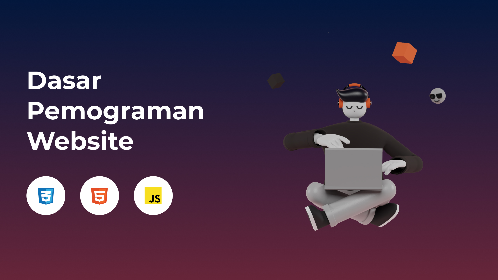

Halo nama saya muhamad rafli alfarizqi
Halo nama saya
muhamad rafli alfarizqi
Judul h1
Judul h2
Judul h3
Judul h4
Judul h5
Judul h6
Teks Tebal
Teks Miring
Text Garis Bawah
Contoh teks span
Makanan Favorit
- Bakso
- Mie Ayam
- Nasi Goreng
- Bakso
- Mie Ayam
- Nasi Goreng
